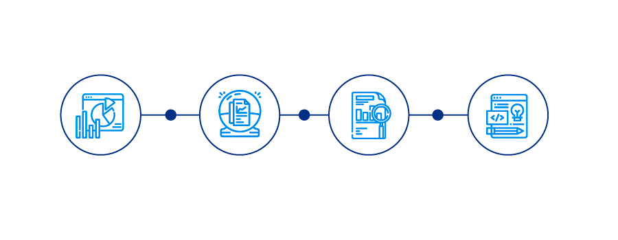

Maria Jose Zuñiga, Sofia Jaramillo
iNFORMATICA MEDICA
¿Que es?
Es la disciplina de ciencias de informacion en el contexto de la medicina especializado en terminologia medica formal y sistemas de comunicacion que optimizan el uso de informacion en areas de salud.
¿Que hacemos?
Responder las necesidades de información de los médicos y los pacientes. Analizar los procesos clínicos. Diseñar, desarrollar e implementar los sistemas de soporte para las decisiones clínicas para facilitar el rendimiento clinico.
Primer Corte (TICS)
Tecnologías de la Información y las Comunicaciones (TIC), son el conjunto de recursos, herramientas, equipos, programas informáticos, aplicaciones, redes y medios; que permiten la compilación, procesamiento, almacenamiento, transmisión de información como: voz, datos, texto, video e imágenes
Segundo Corte (OFIMATICA)
Es un conjunto de herramientas gratuitas alojadas en la nube y accesibles desde cualquier dispositivo, incluso si no se dispone de conexión a Internet: procesador de texto, hoja de cálculo, presentaciones, bases de datos, calendario, correo, etc.
¿Como se aplica la ofimatica en el area de salud?
En el ámbito de la salud, la ofimática cumple el mismo objetivo: optimizar, automatizar y mejorar los procedimientos. Esta se utiliza, principalmente, en la administración en salud, que también se conoce como gerencia de salud, gestión sanitaria, gestión clínica y administración de servicios de salud.
TERCER CORTE (SPSS)
SPSS es un formato que ofrece IBM para un análisis completo.Es el acrónimo de Producto de Estadística y Solución de Servicio. Existen otros productos diferentes en la suite, cada uno de ellos ofrecen sus propias características únicas.

SPSS es un software popular entre los usuarios de Windows, es utilizado para realizar la captura y análisis de datos para crear tablas y gráficas con data compleja. El SPSS es conocido por su capacidad de gestionar grandes volúmenes de datos y es capaz de llevar a cabo análisis de texto entre otros formatos más.
Todos los derechos reservados, contenido diseñado por Sofia Jaramillo y creado por Maria Jose Zuñiga